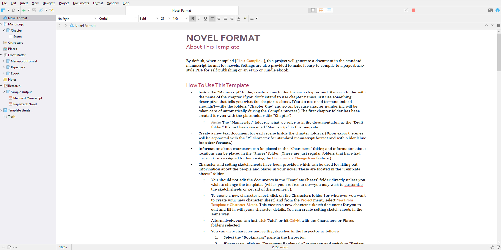
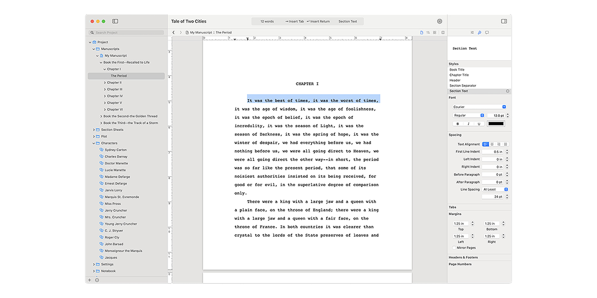
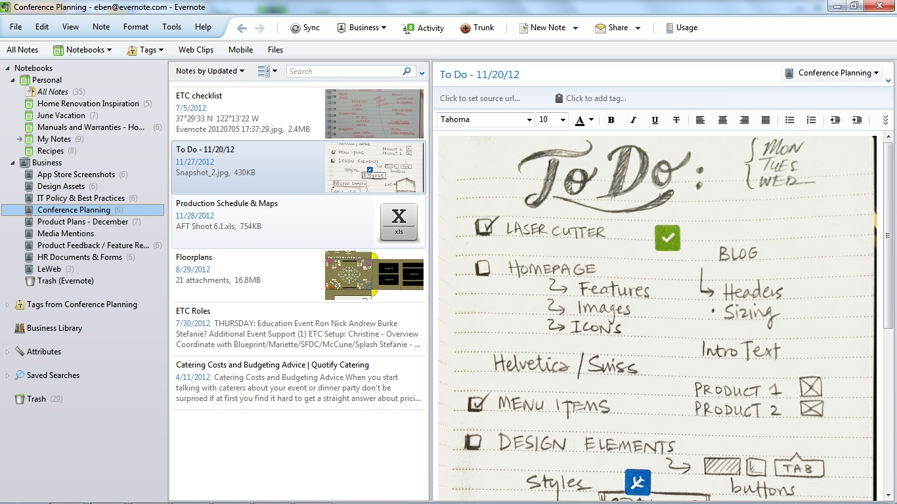
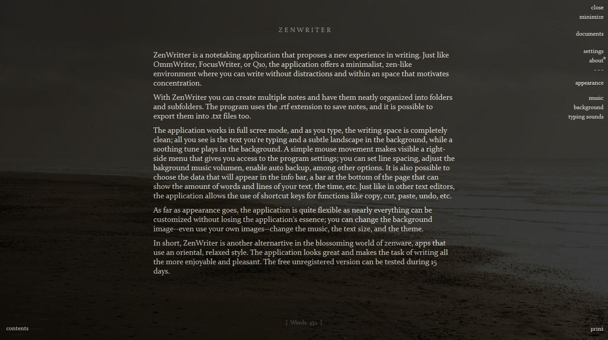
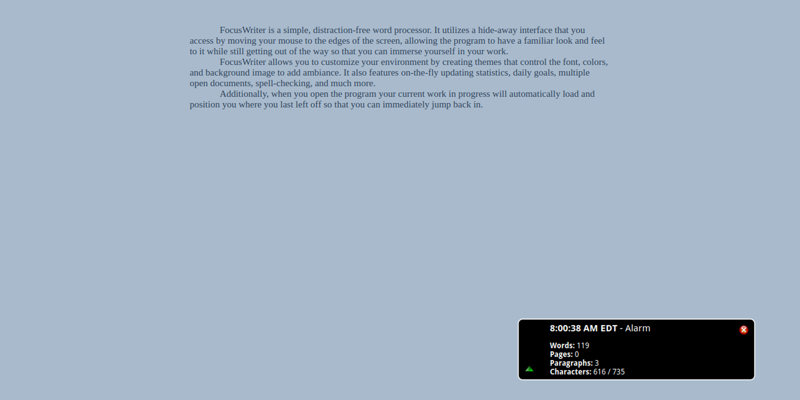

Приветствуем вас на разделе сайта Проект КА!0Б. Здесь вы получите необходимую информацию по программам, проверенным лично создателем сайта, для писательства!

–Scrivener 3 — это мощное приложение для писателей, которое предоставляет обширный набор инструментов для организации и форматирования документов.
Плюсы:
–Гибкая структура: Пользователи могут легко управлять и структурировать сложные проекты, такие как романы, сценарии и исследовательские работы.
–Мощные инструменты для написания и редактирования: Scrivener предлагает разнообразные функции форматирования и редактирования, которые помогают сосредоточиться на написании.
–Управление исследованиями: Возможность хранить все исследования в одном месте, включая изображения, PDF-файлы и ссылки.
–Компиляция для разных форматов: Scrivener позволяет экспортировать документы в различные форматы, включая Word, ePub, PDF и другие.
Минусы:
–Крутая кривая обучения: Из-за большого количества функций новым пользователям может быть сложно освоить программу.
–Цена: Scrivener не является бесплатным, и цена может быть выше, чем у других альтернативных текстовых редакторов.
–Сложность синхронизации: Могут возникать проблемы с синхронизацией между различными устройствами, особенно если используются разные операционные системы.
–Ограниченная поддержка на мобильных устройствах: Мобильная версия Scrivener имеет ограниченные функции по сравнению с десктопной версией.

–Storyist — это приложение для писателей, предназначенное для работы над романами и сценариями, которое доступно для macOS и iOS.
Плюсы:
–Интерфейс, ориентированный на писателей: Storyist предлагает удобный и интуитивно понятный интерфейс, который помогает сосредоточиться на написании.
–Шаблоны для сценариев и рукописей: Предоставляет шаблоны, соответствующие стандартам индустрии, что упрощает форматирование.
–Поддержка многоуровневой организации: Позволяет создавать сложные структуры с персонажами, сюжетами и заметками, которые легко управлять.
–Синхронизация с iCloud и Dropbox: Обеспечивает удобную синхронизацию между устройствами через облачные сервисы.
Минусы:
–Ограниченная доступность: Storyist доступен только для пользователей macOS и iOS, что ограничивает его использование на других платформах.
–Цена: Приложение является платным, и может потребоваться однократная покупка или подписка.
–Функциональность: Хотя Storyist предлагает множество полезных функций, он может не иметь некоторых продвинутых возможностей, доступных в более крупных платформах, таких как Scrivener.

–Evernote — это популярное приложение для заметок, которое позволяет пользователям сохранять и организовывать информацию в различных форматах.
Плюсы:
–Универсальность: Evernote позволяет сохранять текст, изображения, аудио и веб-страницы.
–Синхронизация между устройствами: Заметки синхронизируются через облачный сервис, что позволяет доступ к ним с любого устройства.
–Мощные инструменты поиска: Поиск по заметкам эффективен даже в изображениях и рукописном тексте.
–Шаблоны: Evernote предлагает разнообразные шаблоны для различных типов заметок.
Минусы:
–Ограничения бесплатной версии: Бесплатная версия имеет ограничения по количеству устройств и объему загрузок.
–Сложность интерфейса: Некоторые пользователи находят интерфейс перегруженным и сложным для использования.
–Цена: Премиум-функции требуют подписки, которая может быть дорогой для некоторых пользователей.
–Проблемы с конфиденциальностью: Были опасения по поводу конфиденциальности и безопасности данных.

–ZenWriter 3 — это текстовый редактор, ориентированный на минимализм и создание спокойной среды для писателей.
Плюсы:
–Сосредоточение на написании: ZenWriter предлагает безотвлекающий интерфейс, который помогает писателям сосредоточиться на своём творчестве.
–Персонализация: Пользователи могут настроить фон, музыку и тип шрифта, чтобы создать идеальную рабочую атмосферу.
–Поддержка Markdown: ZenWriter поддерживает формат Markdown, что упрощает форматирование текста и экспорт в другие форматы.
–Одноразовая покупка: В отличие от многих других программ, ZenWriter требует только однократной покупки, без необходимости подписки.
Минусы:
–Ограниченные функции редактирования: ZenWriter не предлагает продвинутые функции редактирования и управления проектами, которые есть в более комплексных программах.
–Отсутствие мобильной версии: На данный момент нет версии для мобильных устройств, что ограничивает возможность работы вне дома.
–Недостаток инструментов для совместной работы: В ZenWriter отсутствуют функции для совместной работы над документами, что может быть недостатком для командных проектов.

–FocusWriter — это текстовый редактор, разработанный для того, чтобы помочь писателям сосредоточиться на написании, минимизируя отвлекающие факторы.
Плюсы:
–Безотвлекающий интерфейс: FocusWriter предоставляет чистое и простое рабочее пространство, которое помогает уменьшить отвлекающие факторы.
–Настройка тем: Пользователи могут настраивать темы, включая фон и звуки, чтобы создать приятную атмосферу для написания.
–Статистика и цели: Программа включает инструменты для отслеживания прогресса, такие как счетчики слов и установка целей написания.
–Таймеры и будильники: Эти функции помогают управлять временем написания и перерывами.
–Поддержка нескольких документов: FocusWriter позволяет работать сразу с несколькими документами.
Минусы:
–Ограниченные функции форматирования: В FocusWriter нет многих продвинутых функций форматирования, доступных в других текстовых процессорах.
–Отсутствие интеграции с облачными сервисами: Нет встроенной поддержки для работы с облачными хранилищами или совместной работы.
–Ограниченная поддержка экспорта: Хотя FocusWriter поддерживает основные текстовые форматы, он может не поддерживать экспорт в некоторые специализированные форматы.